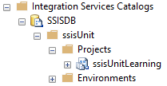

When you set the packages' references in the ssisUnit tests you have four options for the source (StoragePath) of the package:
- Filesystem - references the package in the filesystem - either within a project or standalone
- MSDB - package stored in the
msdbdatabase - Package store - packages managed by Integration Services Service
- SsisCatalog - references the package in the Integration Services Catalog
In this post, I will show you how to set the package reference (PackageRef) for each option.
Filesystem
In the previous posts about ssisUnit, I used the packages from the project located in the file system. So just to have a complete reference:
- if you use the standalone package - use the path to the package
- if you use the package in the project - use the path to the
.ispacfile, and then the name of the package (without the path)
MSDB
If you use the legacy Package Deployment Model, you can store your packages in the msdb database. You have to provide the same details as in the SQL Agent’s job step for SSIS subsystem when you choose SQL Server as the package source:
- The SQL Server instance name
- The full package path, starting with a backslash
Note, that the package does not end with the .dtsx extension.
Package store
 It’s also related to the legacy Package Deployment Model. This time you pick either the packages in the default folder for the Integration Services Service or the
It’s also related to the legacy Package Deployment Model. This time you pick either the packages in the default folder for the Integration Services Service or the msdb database. In the documentation, you can find that the package store is related to the filesystem, but the package store really means the locations that the SQL Server Integration Services Service is aware of. Those locations are defined in the file MsDtsSrvr.ini.xml located in the C:\Program Files\Microsoft SQL Server\140\DTS\Binn folder.
Because it’s managed by the service you set up:
- the server name (not the instance name)
- the path to the package (also without the
.dtsxextension)
SSIS Catalog
When you use the SsisCatalog option:
- provide the name of the SQL Server, where the Integration Services Catalog is stored
- set the path to the project
- set the full name of the package
Currently, only the Windows Authentication is supported, so run ssisUnit with the account that has the proper privileges. Also note, that when you set up the path to the package in the SQL Agent SSIS step, you use the full path to the package, like \SSISDB\ssisUnit\ssisUnitLearning\60_Loops.dtsx. In ssisUnit, you don’t use the \SSISDB\ part.


{kind=link}
{kind=link}
{kind=link}
{kind=link}
{kind=link}